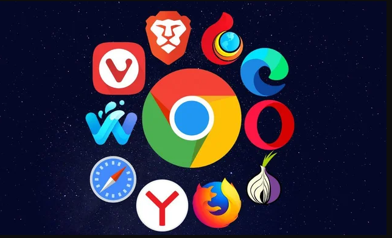
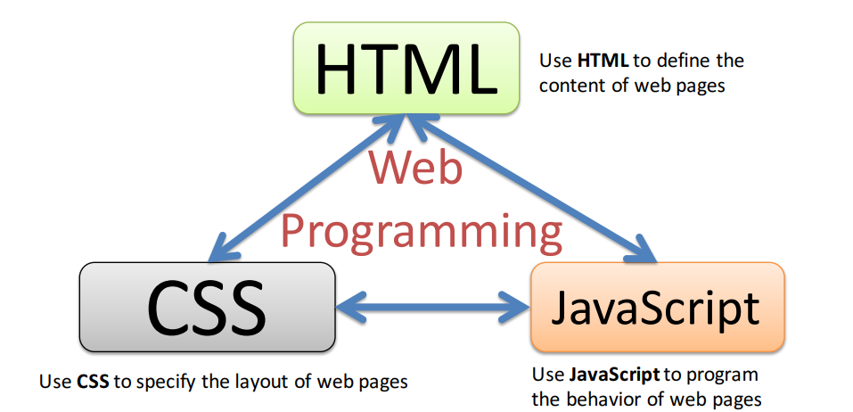
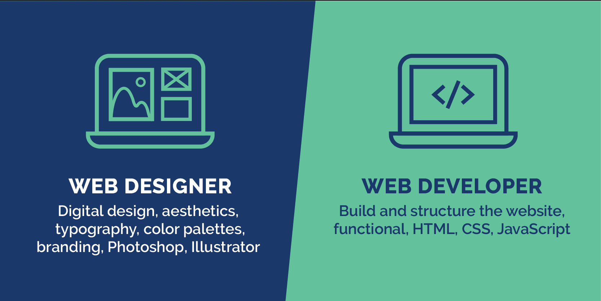

Въведение в уеб програмирането
Какво е уеб приложение?
Софтуерна система, която предлага специфични ресурси за уеб като съдържание и услуги чрез потребителски интерфейс – т.нар. уеб браузър.
Същността на уеб приложенията е взаимно допълване и взаимодействие между две разделени части:
- Клиент (човек, консумиращ услуга - посредством браузър на отдалечен компютър)
- Сървър (доставящ услуга за клиента)
Взаимодействието се контролира от протоколи за обмен на информация през Интернет.
Примери за уеб приложения

Какво е уеб клиент?
В контекста на уеб програмирането най-често се асоциира с някакъв уеб браузър.
Видове уеб браузъри
Какво е уеб сървър?
В контекста на клиент-сървър архитектурата това е компютър (обикновено отдалечен), който предоставя някаква информация или данни или достъп до някакви услуги.
Какво е протокол?
Формално описание на формат на съобщение и правила за обмен на тези съобщения.
HTTP
HTTP протоколът е проектиран за комуникация между уеб браузър и уеб сървър. Самата комуникация се извършва чрез последователно изпращане на заявки и получаване на отговори.
Какво представлява уеб програмирането?
Процес на създаване на уеб сайтове и уеб приложения. Най-общо се разделя на 3 категории:
- Front-End - разработване на клиентската част на едно уеб приложение
- Back-End - разработване на сървърната част на едно уеб приложение
- Full-Stack - разработване на клиентската и сървърната част на едно уеб приложение
Front-End Development
Включва всички неща, които потребителят може да види на екрана, когато си взаимодейства с приложението.
Front-End Trio
Back-End Development
Включва всички процеси по създаване, съхраняване и обмен на информация, които не са видими пряко за потребителите.
Web Developer vs Web Designer
Какво ще изучаваме по време на курса?
- HTML
- CSS
- JavaScript
- Клиент-сървър архитектура
- UI5 Web компоненти
- Едностранични уеб приложения
Какви инструменти ще ни трябват по време на курса?
- уеб браузър - Google Chrome, Mozilla Firefox, Edge
- редактор - Notepad++, Visual Studio Code, Sublime